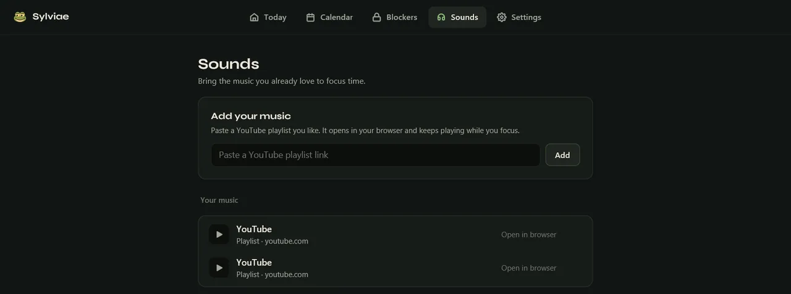
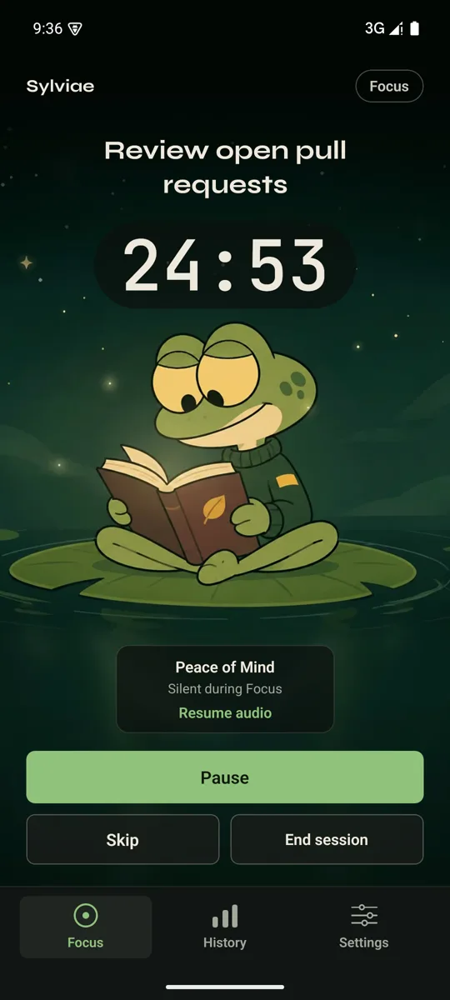

Begin with one task.
A focus timer and your tasks share one calm Windows workspace.

Close the distractions.
Selected sites and apps stay out of reach when a Windows focus session starts.

Let the room settle.
Focus audio can follow the timer and fall silent during breaks.

Take the calm along.
The Android companion is in private beta, available by request.
Request Android beta access Opens GitHub · a free account is required.Android beta saves blocklists; it does not block sites or apps.
A few good things to know.
Is Sylviae free?
The current Windows beta is free to download and use. No account is required for the core tools.
Does it work offline?
The core timer, local tasks, history, blocker preferences, and offline tracks stay on your device. Cloud imports and streaming audio need internet.
Which devices are supported?
The public installer supports Windows 64-bit. The Android companion is a private beta by request; there is no public mobile download or store listing.
Does Android block sites and apps?
Not yet. The Android beta saves your blocklist only. Site and app blocking is a Windows desktop feature.